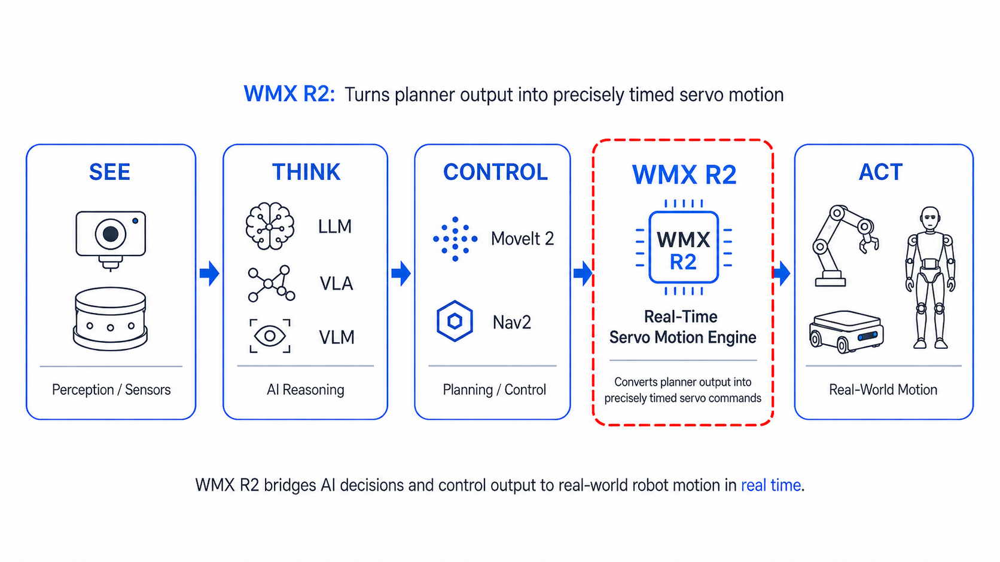
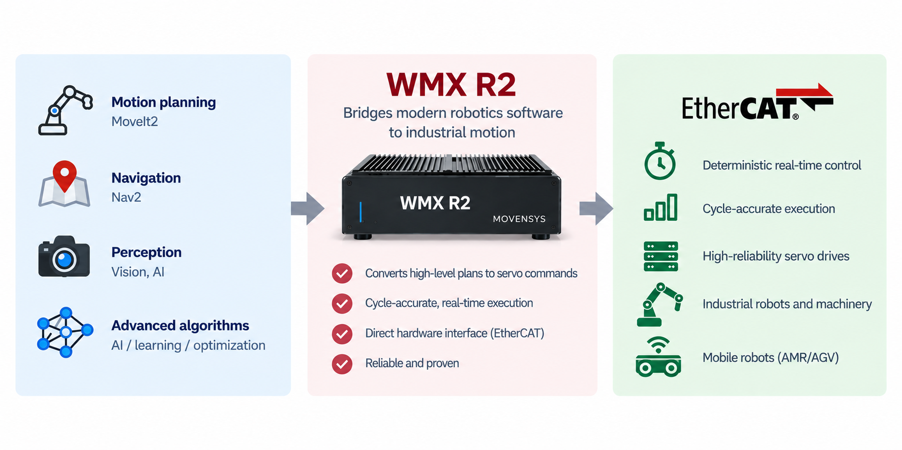
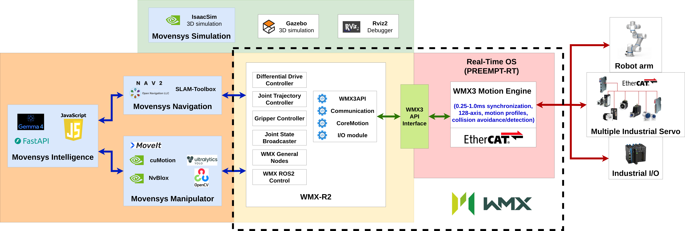
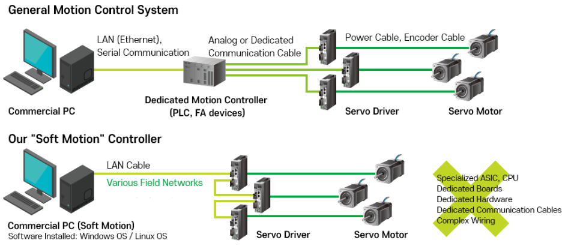
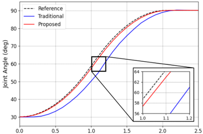
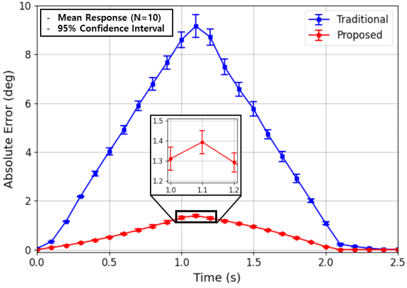

WMX R2 Documentation#
WMX R2 brings the ROS 2 ecosystem into deterministic real-time industrial motion control. It connects a ROS 2 interface to the WMX motion engine and drives industrial servos over EtherCAT. EtherCAT is one of the most widely used real-time industrial Ethernet networks, and it links the controller to the servo drives and I/O over a single cable.
Turn Physical AI decisions into precise industrial motion#
WMX R2 turns planner output, such as MoveIt2 and Nav2 trajectories, into precisely timed servo commands. It also gives direct control of the axes, the I/O, the motion engine and the EtherCAT network, which is what industrial commissioning and diagnostics need. In the See–Think–Act loop of Physical AI, WMX R2 is the Act layer. It executes what the AI decides, on real industrial hardware, in deterministic real time.


Bring modern robotics capability to industrial-grade motion#
Industrial motion controllers execute deterministically but have no path to modern robotics software, and ROS 2 has that software but cannot guarantee cycle-accurate execution on real hardware. WMX R2 closes the gap. ROS 2 nodes reason, plan and control, and the WMX motion engine turns their output into precisely timed servo commands on a fixed cycle over EtherCAT.


WMX R2 closing the gap between ROS 2 and industrial motion control.#
Drive any EtherCAT robot or machine, regardless of the brand#
WMX R2 commands the servo drives directly over EtherCAT using CoE (CANopen over EtherCAT), the standard protocol industrial servo drives already implement. It does not go through the robot manufacturer’s controller. It controls axes rather than a specific robot model, so neither the brand of the robot nor the brand of the drives matters. A six-axis arm on an assembly line, a mobile base moving material through a plant and a custom multi-axis machine are all driven the same way.
Free to start with#
You can evaluate WMX R2 on real industrial hardware at no cost. The WMX motion engine runs free in 6-hour sessions, renewed by restarting the engine. That is enough to commission a machine, work through the examples, and develop and test a complete application. A commercial license lifts the session time limit, and is what production use requires.
The ROS 2 interface is open source under the MIT license. It handles the timing-sensitive step: smoothing trajectories, coordinating joints and emitting commands at the rate servo drivers expect. It runs on the WMX motion engine, which keeps motion on a deterministic cycle and exposes more than 200 APIs for trajectory conversion, EtherCAT, I/O and engine control. The WMX engine, its SDK and its binaries are proprietary of Movensys. Licensing sets out the boundary.
Start from ready-made examples instead of from scratch#
Four companion repositories show how these pieces fit together on real hardware. Each one is a working reference implementation built on WMX R2, and a starting point for an industrial application of your own:
Repository |
What it provides |
|---|---|
Manipulator scenarios with MoveIt2 / Isaac cuMotion planning and Nvblox / YOLO / AprilTag perception |
|
A differential-drive mobile base with Nav2 planning, EKF odometry and SLAM mapping |
|
A voice-driven VLM/LLM application (the Robopoly game) built on top of the manipulator stack |
|
The Isaac Sim scenes used by the manipulator and navigation scenarios |
Each application repository runs in its own container and talks to WMX R2 over DDS, so the planning stack and the real-time stack stay separate processes on the same machine.
See Example Applications to run these scenarios from start to finish.


WMX R2 architecture overview.#
Integrate with the most popular ROS 2 ecosystem you already use#
WMX R2 works with the widely popular projects of the ROS 2 ecosystem, so an industrial machine can reuse what the robotics community already builds:
Project |
What it is popular for |
|---|---|
Manipulator motion planning |
|
Mobile robot navigation |
|
Hardware interface and controller management |
|
Optimized inference on Intel XPU and integrated accelerators |
|
Simulation and hardware-in-the-loop testing |
|
NVIDIA GPU accelerated perception and control |
|
Real-time object detection |
|
Gemma and other multimodal LLMs and VLMs |
Natural language task specification and high-level reasoning |
See WMX R2 in action:
Run the entire stack on a single edge device#
With WMX R2, perception, planning and deterministic motion all run as software on one machine. WMX R2 is also hardware agnostic. The motion engine is software and the EtherCAT master runs on a standard network port, so no external motion controller and no dedicated motion-control hardware are needed. The same stack runs on x86-64 and arm64 alike, from an industrial PC or an Intel Core based desktop or laptop to an NVIDIA Jetson Thor.


Conventional motion control routes the PC through a separate dedicated motion controller; WMX software motion drives the servo drives directly from a single edge device over the field network.#
Take robotics from the laboratory to the production floor#
A research robot can tolerate jitter, missed cycles and frequent restarts. An industrial robot on a production machine cannot. It has to hold path accuracy, react to I/O within a known time and run for long periods without drift. WMX R2 keeps the ROS 2 development workflow and adds what production needs: deterministic cycle timing, servo-level error handling and direct access to the drives.
Cut tracking error by 85% against an external controller#


Representative run: joint-angle tracking for the commanded reference, a traditional external motion controller, and WMX R2.#


Per-sample mean absolute error across ten runs.#
WMX R2 followed the commanded trajectory with 85% lower mean absolute error (MAE) than a conventional external motion controller. We ran the same trajectory ten times on each setup. The left panel shows a representative run, and the right panel shows the per-sample MAE across all ten. The gain comes from removing the TCP/IP hop and the redundant control stage that an external controller adds, which cuts communication latency out of the control path.
Customers and Partners#
WMX R2 is built on the WMX motion engine, which has a long, proven industrial track record:
25+ years of development with 40+ patents worldwide
40,000+ cumulative licenses sold
500+ customers, mainly in the semiconductor industry
Where to go next#
Follow the Getting Started guide to set up the environment and run the package.
Work through the Example Applications to run trajectory, perception, and intelligence demos.
See Integration Scenarios for the supported motion-planning and application integrations.
Work through Try Your Robot before moving a physical robot; parameter validation, first motion, safety responsibilities, and the list of validated robots.
Refer to the API Reference for ROS2 services, topics, and actions.
Consult Support for common issues and their resolutions.
Read Licensing for the boundary between the MIT-licensed ROS 2 interface and the proprietary WMX motion engine.
- Getting Started
- Example Applications
- Try Your Robot
- Integration Scenarios
- API Reference
- Support
- Troubleshooting
- Robot Moves in the Wrong Direction
- Robot Moves the Wrong Distance
- Wrong Joint Moves
- All Joints Offset by a Constant
- No /wmx Services or Topics at All
- Motion Service Answers success: false
- Parameter Change Has No Effect
- Device Creation Failures
- EtherCAT Scan Failures
- Communication Start Failures
- Joint States All Zero
- Servo Alarm Errors
- Trajectory Execution Failures
- Gripper Not Responding
- Nodes Not Found
- Build Errors
- Getting Help
- Troubleshooting
- Licensing
- About Us